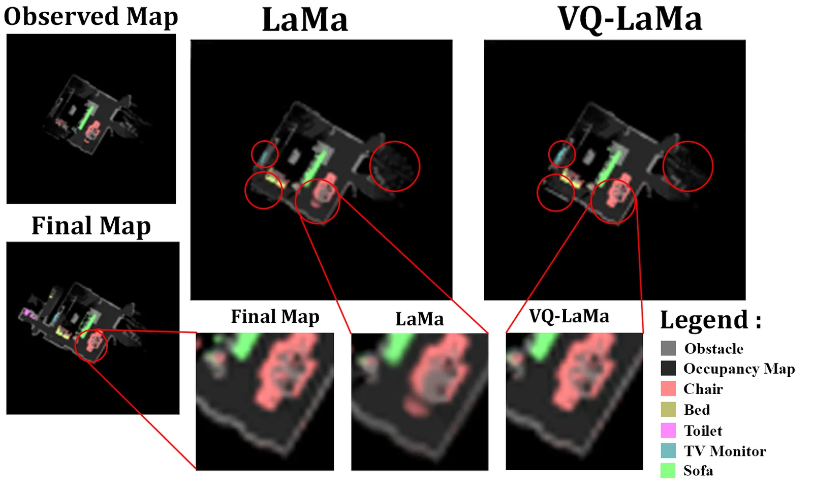
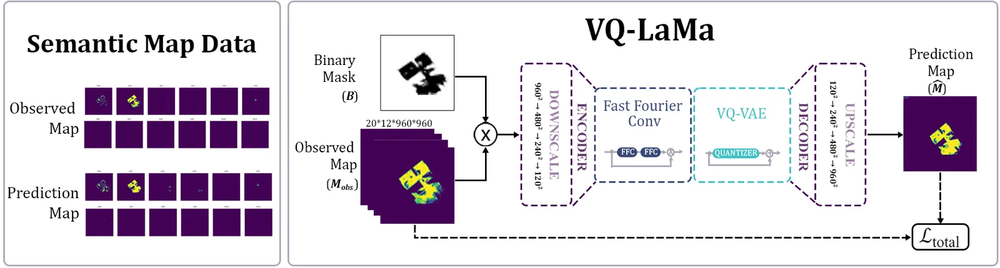

KRoC 2026 · Published
VQ-LaMa for Discrete Semantic Map Inpainting
Adds vector quantization to LaMa so semantic-map completion composes walls, corners and corridors from a learned codebook, giving sharper, more consistent maps for exploration.
- Venue
- KRoC 2026
- Status
- Published
- Role
- First author
- When
- 2026
- Where
- Robotics & AI Lab, Kwangwoon University
Abstract
Exploration for autonomous embodied agents remains challenging when it must be performed jointly with object-goal navigation. We address this by casting semantic map completion as an inpainting task over partial semantic maps.
We propose VQ-LaMa, which integrates vector quantization into LaMa to enforce discrete spatial representations. By quantizing the continuous bottleneck to a learned codebook of architectural primitives (e.g., walls, corners, corridors), the model composes predictions from reusable discrete patterns rather than averaging features.
Evaluated on robotic exploration sequences, VQ-LaMa produces sharper semantic boundaries and more structurally consistent predictions, and its gains increase with available spatial context, indicating that discrete, compositional representations better capture the categorical nature of semantic maps than continuous averaging.

